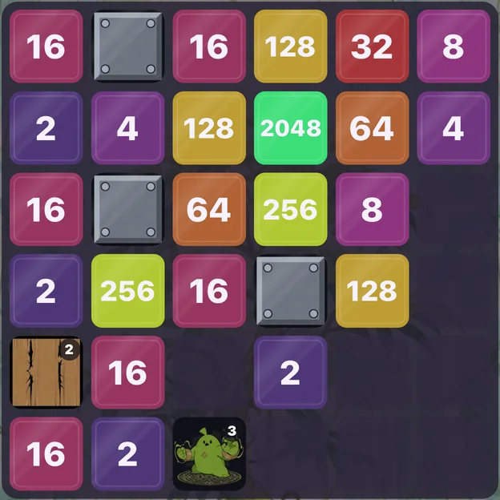
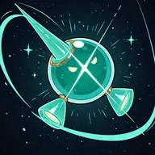
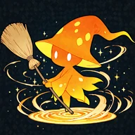
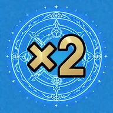
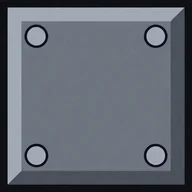
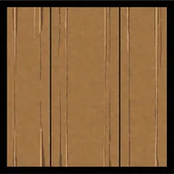

Positive
マグネットMagnet
準備が終わると、同じ数字を盤面中から吸い寄せて1枚ぶんずつ倍化する。
Pulls every matching number across the board and steps each one up.
スワイプで数字を寄せて合体させます。盤には8種類のパネルが降ってきて、毎回ちがう展開になります。このページは遊び方とお問い合わせのための公式サポートページです。
Swipe to push numbers together and merge them. Eight kinds of panels drop onto the board, so no two runs play the same. This is the official support page — how to play, and how to reach us.
パネル8種 ／ 背景58枚 ／ 盤は6×6 ／ ランキングは3種類 ／ 広告なし ／ 通信なしで遊べます
8 panels · 58 backgrounds · a 6×6 board · 3 leaderboards · no ads · playable offline

押すと合体します。色はアプリと同じ計算で決めています。Tap it to merge. The colours come from the same formula the app uses.
スワイプで寄せる。上下左右のどれかへ、盤の数字をまとめて動かします。同じ数字がぶつかると合体して倍になります。
パネルを育てる。×2 やスイープなどの役に立つパネルは、置かれた直後は「準備中」で合体しません。カウントが 0 になるまでに盤を整えて、当てたい数字へ狙って当てます。
鉄を壊す。鉄はボムでしか壊せない邪魔物ですが、壊すたびに見返りがあります（ライフの節）。途中でやめても、次に開いたとき「つづき」から再開できます。
Swipe to push. Every number on the board slides the way you swipe. Matching numbers collide and merge into one that's twice as big.
Let panels charge. Helpful panels like x2 and Sweep arrive “charging” and won't merge yet. Use that time to arrange the board and aim them at the number you actually want.
Break the iron. Iron is a blocker only a bomb can remove — but every one you break pays you back (see Lives). Stop whenever you like; the game picks up where you left off.
はじめの6つは役に立つパネル、あとの2つは邪魔物です。役に立つ側は「準備中」のあいだ合体しません。
The first six help you; the last two get in your way. The helpful ones don't merge while they're charging.
準備が終わると、同じ数字を盤面中から吸い寄せて1枚ぶんずつ倍化する。
Pulls every matching number across the board and steps each one up.

0になると上下左右4マスの数字が1段上がる。自分は消える。
At zero, raises the four neighboring numbers one step, then disappears.

0になると盤面の 2 をすべて消す。長く待つぶん、盤面が広く空く。
At zero, clears every 2 on the board. The long wait buys you a lot of room.

準備が終わると、相方なしで数字を2倍にする。
Once charged, doubles a number with no partner needed.
準備が終わると、相方なしで数字を4倍にする。
Once charged, quadruples a number with no partner needed.
0になると十字5マスが爆発。鉄は消え、数字は4段下がる。鉄を壊せる唯一の手段。
At zero, explodes in a cross of 5 cells. Iron is destroyed; numbers drop four steps. The only thing that removes iron.

合体しない邪魔物。1手に1マスしか動かない。ボムでしか消せない。
A blocker that never merges. Moves only one cell per turn; only a bomb removes it.

鉄の軽い版。3回動かすと自分から壊れる。ボムなら1発。
A lighter blocker. Move it three times and it breaks on its own; a bomb does it in one.
10枚で残機+1iron = +1 life
鉄はボムでしか壊せません。壊しにいくのは手間ですが、そのぶん見返りがあります。積み上げた成果ほど失いにくい設計です。
Only a bomb removes iron, so going after it costs you moves — and pays you back. The more you've built up, the harder it is to lose.
本体は無料で、広告もありません。残機が尽きて盤面も詰まったときにだけ、コンティニュー3回ぶんを購入できます。買った回数に上限は掛かりません。購入は任意で、買わなくても最後まで遊べます。
購入が反映されない場合は、通信状況をご確認のうえアプリを開き直してください。それでも反映されないときは、下記のメールまでご連絡ください。
The game is free and carries no ads. When your lives run out and the board is stuck, you can buy three continues. There's no cap on how many you buy, and it's entirely optional — the game is complete without it.
If a purchase doesn't appear, check your connection and reopen the app. If it still doesn't show up, email us at the address below.
スコア・手数・鉄破壊数の3つです。参加は任意で、送るのは集計した数字とニックネームだけです。走った内容そのものや、端末を特定する情報は送りません。詳しくはプライバシーポリシーをご覧ください。
Score, moves, and iron destroyed. Taking part is your choice, and only the final numbers and your nickname are sent — never the details of your run. See the Privacy Policy for the specifics.
不具合のご報告・ご要望・購入に関するお問い合わせは、こちらのメールまでどうぞ。返信にはお時間をいただくことがあります。
Bug reports, requests, and purchase questions all go to the address below. Replies may take a little time.
nanana03info@gmail.comスコアや「つづき」は端末内に保存されます。ランキングに参加したときだけ、集計した数字とニックネームが送信されます。詳細はプライバシーポリシーをご覧ください。
通信状況を確認してアプリを開き直してください。購入は端末側にも控えが残るため、次に起動したときに渡されます。それでも反映されない場合は下記メールまでご連絡ください。購入時の日時をお知らせいただけると調べやすいです。
スコアと「つづき」は端末内保存のため、引き継がれません。
出ません。行動追跡や解析のSDKも入れていません。
遊べます。通信が要るのはランキングの表示と投稿、コンティニューの購入のときだけです。
パネルの数字は 2 の1023乗まで正確に扱えます。表示は 4 文字に収まるあいだは K / M / G … の単位で、それより大きくなると 2^70 のような指数の形になります。
Your scores and your saved run stay on your device. Only when you join a leaderboard are the final numbers and your nickname sent. See the Privacy Policy.
Check your connection and reopen the app — purchases are also recorded on your device, so an unreceived one is handed over on the next launch. If it still doesn't show, email us; the rough date and time of the purchase helps a lot.
No — scores and your saved run are stored on the device only.
None. There's no tracking or analytics SDK either.
Yes. A connection is only needed to view or post leaderboard scores and to buy continues.
Tile values stay exact all the way to 2^1023. They display with K / M / G… units while that fits in four characters, and switch to exponent form (like 2^70) beyond that.